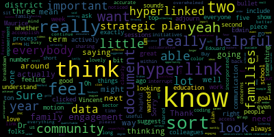
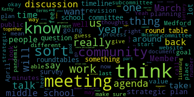
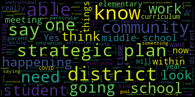
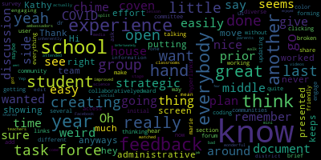

[McLaughlin]: Hi, everyone.
[Graham]: Sorry about that. Can you all hear me okay? Awesome. Give me one second to pull up my agenda. I am going to start reading so that we can get going. Please be advised that on Tuesday, February 2 from five to 630 there'll be a communications engagement and strategic planning subcommittee meeting held through remote participation via zoom pursuant to Governor Baker's March 12 order suspending certain provisions of the open meeting law. and the governor's March 15th, 2020 order imposing strict limitations on the number of people that may gather in one place, this meeting of the Medford School Committee will be conducted via remote participation to the greatest extent possible. Specific information and the general guidelines for remote participation of members of the public and or parties with the right and or requirement to attend this meeting can be found on the city of Medford website at www.medfordma.org. For this meeting, members of the public who wish to listen or watch the meeting may do so by accessing the meeting link contained herein. No in-person attendance of members of the public will be permitted, but every effort will be made to ensure that the public can adequately access the proceedings in real time via technological means. In the event that we are unable to do so despite best efforts, we will post on the city of Medford and Medford community media websites and audio or video recording transcript or other comprehensive record of the proceedings as soon as possible after the meeting. The meeting can be viewed from Medford community media on Comcast channel 15 and Verizon channel 45 from five to 630. Since the meeting will be held remotely participants can call or log in by using the following link or call in number. So one of the call in numbers is 301-715-8592. And the meeting ID is 923-9988-1674. Our agenda tonight has two items on it. The first is our district-wide strategic plan, and the second is middle school orientation practices. So I think I will start by calling the roll. Member Kreatz? Here. Member McLaughlin? Here. Member Graham? Here. So three present, none absent. The first topic on the agenda is starting to revisit the strategic plan. And my goal for the meeting today, because I had to cancel the January subcommittee meeting, was just to talk about sort of the thoughts about getting the strategic plan sort of back to the forefront. And thinking really about a timeline of how we would like to proceed as a committee, as it relates to the strategic plan so obviously it's meatier than any given hour and a half meeting so I just wanted to have a couple of minutes of discussion around sort of. where we hit the pause button, I guess, at the beginning of the pandemic, and then what we're planning, you know, how we're planning to pick that back up since then so that we can pick that up, make whatever revisions are necessary, and continue to move through that process. So Dr. Edward-Vincent, do you want to jump in and give us sort of a a reminder of what that looked like back before all of this change has happened.
[Edouard-Vincent]: I was on mute. Yes, if it's possible, I'm going to try to screen share just so that people can have an idea of what the strategic plan document was. So just give me a moment, please. That's not what I wanted. Give me one more moment. Sorry about that. I wonder why it's doing that.
[Cushing]: Do you want me to pull it up? I have it ready.
[Edouard-Vincent]: Perfect. You got it. Can you see? You guys can see this one. I don't know why it's doing something a little unusual today, but okay. So this is what the draft strategic plan looks like. It has our mission and vision statement that the Medford Public Schools is a caring educational partnership of school, family, and community designed to ensure that all students are afforded a safe and healthy learning environment in which they develop the knowledge, skills, and attitudes to reach their full academic and personal potential. This partnership is dedicated to providing all students with a 21st century education that will enable them to be lifelong learners and contributors to a diverse and rapidly changing world. Our four core values that the strategic plan is based upon are achievement, collaboration, equity, and support. Under achievement, we had fostering student growth and achievement, fostering collaborative relationships. fostering equitable learning environments, and fostering a safe and supportive learning environment. These are the four large bucketed areas that we are focusing on, which take all the work that's happening across the entire district and are showing what those bodies of work are. So under fostering student growth and achievement. Medford Public Schools will develop and implement cohesive district-wide curricula and instruction assessed through various methods designed to help learners reach their potential as knowledgeable, ethical, and critical thinking citizens. Beneath that bucket, or within that bucket, contains these four bulleted areas. using instruction that focuses on evidence-based responses, productive struggle, academic discourse, access for all, and feedback. This was based on the five core actions that as a district we have been using for the previous years. And this is required to help us implement the curriculum frameworks. We also ensured that we would provide instructional technology that meets the curricular needs of educators and learners. Research and implement common assessments that address benchmark and interim measures in order to inform instruction and make modifications to our current curriculum. and to recruit and retain an effective and diverse staff. So within each of these areas are the respective hyperlinks where we talked about action items, outputs. Let's see if I can get this a little larger. So under this, We had early indicators of success, what were the resources, additional resources that would be needed, anticipated outcomes, and a project manager. These were, all of these subcategories are the action items that we would like to be able to accomplish as a district regarding bullet number one. So educators will participate in ongoing professional development designed to address shifts in the curriculum frameworks. The outputs would be that all educators will continue to receive up-to-date current information on DESE adopted frameworks. And so the lead people responsible for that would be our curriculum directors and lead teachers, where we would be going and working constantly in collaboration with Desi. We are also committed to as another action item, providing professional development in best instructional practices, including evidence-based responses, productive struggle, academic discourse, access for all and feedback. An example under what could be classified as access for all is the current professional development being offered by Susanna Campbell that selected members including school committee members are participating in some of that professional development. So it's using the five core actions, but offering professional development above and beyond. And again, that would be presented by our directors of curriculum and instruction, our administrators and department heads. adoption and implementation pertaining to elementary science in the area of FOSS. And we had timelines for what that would look like for all of the different pieces that were being added. And for every single bullet, we have Implementation of new social studies curriculum framework, K to 12, provision of professional development and materials to support these changes. The implementation of the Commonwealth civics challenge for both middle schools and the high school. Review of new research-based comprehensive elementary literacy programs, rubrics to select elementary literacy program and implement elementary literacy program. Adoption and implementation of materials pertaining to middle school mathematics, illustrative math, curriculum guides, professional development training, refinement of the scope and sequence, use of benchmarks, and consumables. review of available elementary math programs. Again, that had to be paused temporarily. We know we're going to start that up again because the math curriculum was 2015. And so Ms. Faiza Khan will be going through a process with the math department and math teachers to be looking at piloting different math programs for next school year. And some of this information was presented at the curriculum subcommittee meeting back in December. Determine a protocol for assessing instructional materials. Assess current status of instructional materials for bias. introduce a protocol and provide organized opportunities for peer educators and visits across the district, which the visits across the district have been temporarily paused due to the virus. So these are some of the sub-bullets that are within every single indicator. And I'm gonna just ask Dr. Cushing because he also, we all worked on this but I'm not sure if there's a particular indicator Dr. Cushing that you would like to speak to.
[Cushing]: I think there are actually two, fostering equitable learning environments and fostering a safe and supportive environment. So under there, we spent a lot of time really considering, looking at the equitable learning environments, really considering the access through multi-tiered systems of support and enrichment. We really focused on adding that enrichment piece that is not part of the Massachusetts MTSS. framework, but we wanted to add that here and you know you can see some of the things that we've added here, refining the district vision and creation of the MTSS and establish the systems within the buildings and you'll see some of the staff professional development and training that we needed to include but not limited to. You'll notice dyslexia, co-teaching, students who are EL, students with disabilities, social emotional learning, other enrichments, screening and data use. Obviously a lot of this was supposed to be done throughout the 2020-21 school year, but then something big happened. So we've been doing more triage work around these and other situations. Dr. Vincent, if you'll go back to the main screen, Yes. And then, you know, really wanted to also, the last bullet in that, the, I'm sorry, not that one, the above one, the equitable learning environments. Wanted to make sure that we're promoting the health and the wellness of students. This is really something critical that we, that we're trying to focus on this year, given all the various things that students are facing with the isolation and the inability to have normal interactions with their peers. So our Councilors and others are working diligently to reach out to families, to connect with families, and to make sure that we're doing those types of things. But we want to make sure that we're developing a culture and climate action plan for our district. We want to make sure that we're determining a method for data collection around school culture, reviewing the data to determine the next steps. So really doing a heavy in-depth data analysis. and really looking at what is our capacity to help create a positive school climate and culture for our overall systems. And if you go back to the last screen, I'll touch on one bullet in the establishing and fostering a safe and supportive learning environment So one of the things that a small group of us working on, and this is something that needs to be really tight and cohesive work, it's the continue to use and refine consistent safety protocols. Now those safety protocols are an immediate response protocols and other things like that that really need to be developed with a very, very tight group because these are really the security and support procedures for our organization, in addition to a great many other things. And so generally speaking, that's not something that's published widely because then it can give the game plan for what we are going to be doing. So we want to make sure that we're examining building infrastructure in order to support safe environments. So are there physical things that we can do to say, you know, a key card system or various things along those lines to improve our our building facilities. Really want to look at our threat assessment protocols with administration, our clinical and counseling staff, and our Medford Police Department. Want to make sure that we're getting people well-trained in that. Myself, a few Councilors, and Ofra Ziobro went to a training, I believe it was last November, prior to the closure, around threat assessments. how to make sure that we're not over-responding to a situation, but we're supportive in the response necessary, making sure that we're translating commonly used phrases into the language of students, establishing multidisciplinary safety working groups, and to compile all of the building safety plans and come up with a district immediate response plan. And so that's just one of the aspects of the strategic plan that we're actually very excited to get back to and work on and not focus solely on COVID. Dr. Edward-Vinson.
[Edouard-Vincent]: Thank you.
[Graham]: Wouldn't that be a fun day to not have to worry about COVID for just one glorious day?
[Cushing]: I mean, the interesting thing is I remember last March 12th when we shut down the strategic plan, the immediate response, and many other things where I was like, oh, we'll have all this time to do all of this work. I've never been more wrong.
[Graham]: never ever right so you know I think when we when we left off this document was presented to the school committee and then it was referred to this subcommittee and I think I tried to remember sort of my thoughts at that time and I went back and looked through some of my notes. And I think, you know, one of the things that I was hoping we could do today is talk about like the right ways to engage the community in this discussion. And, you know, I think one of the things that sort of stood out to me that I recall at the time was I read the mission and the vision statement, and I don't believe it's changed. And I think even pre-pandemic, my question was, should it? It's a big mouthful of words, and I think the sentiment is there, but I also sort of wonder if it resonates with our community at large, the overall mission and vision.
[Edouard-Vincent]: So I think it's interesting that you say that because when we were working on the strategic plan, the mission vision definitely is a lot of words. But when we think about how can you distill it or bring it down, what are we really saying in Medford that we will prioritize? Yes, we prioritize educating the whole child. We believe that since we're a school system, when we're talking about how students learn, what's happening under the instructional umbrella, it's about student learning, how are they achieving their goals? And so achievement, was the term, but it's about learning and instruction. How do we want that to be able to happen in order to be able to work as a district, as a community? We wanna work together, build upon one another's strengths and provide students not only with adults, but all the way down to the classroom. I mean, right now we're on COVID time, but when we think about collaboration, pre-COVID, it was talk to your elbow partner, turn and talk. who's your buddy, whether it was at a particular table or a group when students would go and work on, you know, in the glory days when they could get up from their desks and go work in a corner of the room and they could pick a buddy or they could be assigned to a buddy depending on what the specific task or activity was, but to promote that collaborative learning. And that's where that collaboration came from. How are we going to do all the work that we do? It may not look the same everywhere, but we want it to be done in an equitable fashion. And that was where the equity came from and support. How are we going to do it? At the time when we talked about fostering a safe and supportive learning environment, nobody was thinking when we said support, a safe and supportive learning environment, we were thinking about a place where children would feel welcome and you could be who you are and learn and grow and be challenged. And now when we think about safe and supportive learning environment in COVID days, you have to have your mask, you have to have hand sanitizer in every single room, you've got, you know, hand pumps and you've got foot pumps. It's like, You've got plastic shields. Remember McLaughlin and I were just looking at classrooms at the beginning of the school year, and they were putting up plastic shields and little hooks, and kids could have a mask break and hang up their mask for a few minutes. At the time, when we were working on this. And this last kind of version that you're looking at was from January of 2020. But we had already started the work a year plus prior to that. But this was us taking all of the work that we had done from 2018 to 2020 try to bring it all together in one place. There are a lot of initiatives within the district. There are so many initiatives that are taking place within the schools and trying to say, as a district, we need to bring everything that's happening instructionally, social, emotionally, even from protocols and fostering and promoting a safe and supportive learning environment. we needed to take all of that information and have it housed in one place. And so that's what the strategic plan was, looking at all of the things that were happening district wide and dividing that up and saying, how are these pieces going to be executed? So from promoting the health and wellness of students, I mean, we've even said amongst ourselves, we know now that we're living in the COVID era, how many shifts do we have to make to some of the things that were already listed, which are kind of like practices that were happening, but now with COVID, What does that look like? And what does that mean? We have circles on the floor and arrows and tape and to try to limit large groups. So those are things where we had to figure out how are we going to adjust. And so those are pieces that we want to go back to the strategic plan and infuse those additional things that had to be added in order to make in order for us to function as a district, which at the time when this was created, no one realized what was going to be happening. So this particular strategic plan really was looking at, this was one of the requirements of NSUP, that every district should be able to take the instructional programming, the initiatives, and all of the things that you're doing within a district to be able to take it and bring it into one place. And for people to be able to say, oh, this is what they're doing. So if you think about different reports that have happened over the course of the year, and based on feedback from subcommittees as well. So under category two, collaborative relationships engage in timely, thoughtful, two-way, culturally proficient communication. So all communications are now translated. We are using different apps the talking app and different apps to help with EL families. The teachers are using those. Most recently, Member McLaughlin asked us to figure out how to get the closed captioning added function that we didn't have, I think, on the previous Zoom. And we had to figure that out. But now, even for this meeting, for people who need to use closed captioning, that's another way. So if we were to click on this one, I don't think closed captioning was listed, but now we would need to go back and look at what does two-way communication look like and be able to say that closed captioning was added. So I don't know if that it's so it is something when you you you you look at the entire district and you say well what's going on here. Yes, the smartphone applications and and we had a new website that was deployed a year ago. that we're continuing to tweak and refine. But the new website that was deployed a year ago, the previous website, I think, hadn't been changed for probably more than 10 years. So that was a huge shift where something had been in place for a long period of time, and then you know, to start off with a newer website. And as we continue to get feedback and continue to say, OK, this is what's pressing. This should be, you know, right on the top of the website. We are working to make those necessary adjustments in real time. But these were things that we were working on and saying, what did we want to be able to do to improve communications and having it housed one place so that as a leadership team, the senior leadership team, and working with all of our directors, all of our department heads, Everyone can speak the same language. Everyone can refer back to it and say, oh, yes, this is engaged in timely, thoughtful, two-way, culturally proficient communication with the Medford Mustang community. And when this was written, and from the time that we wrote it to all of the changes and shifts that have happened just right now, The strategic plan is something that is like a living document. It's not set in stone, but it lets you know these are all of the things that are happening within the district. So, that that's kind of you know where where we are so whether member graham you're saying to you know for us to revisit and look specifically at the mission and vision and um you know update it to 2021 um we could you know definitely look at that but in terms of as a district and how we need to run and how everyone needs to be speaking the same language and realizing what are the initiatives that we're doing this is a document where administrators can use it teachers can use it so when you say we're working on x y and z it's in our strategic plan everyone's in agreement and so although right now in this format it's not for students but what students will be experiencing are outlined in detail within the strategic plan.
[Graham]: Yeah. And I guess, you know, You know, one of the things that was so interesting about the reopening task force that we had is that when you brought all those folks together, they'll like really different takes on the same thing, right? And so it was, it was a really valuable exercise in just sort of understanding different perspectives across the community. And I, I know we need to sort of move on, but I don't want to not have sort of a set of action items about the strategic plan because it is really important. Part of me is, you know, wants to have some discussion about how we engage the community in this discussion. And then I think the other thing for the school committee to consider is, you know, part of the value of the strategic plan is, as you say, like, so that all of the folks that we're asking to align to it and do work In support of it know what that work looks like and why they're doing it and where it fits. But the other value of the strategic plan for the school committee in the community is to say these are our priorities. So when we start to talk about budgeting and things like if we if we want to have, you know, If the website becomes the most important thing and we're not resourced to support The changes to the website that sort of get us to the strategic plan. That's a decision point for the committee to make In terms of like what has the community told us that they value and then how do we how do we take? The the work that is happening, which is all in one place Match that with what the community is expecting and make sure that our budget reflects those values. So I feel like We have some work to do in terms of hearing from the community about our strategic objectives and maybe it's not about. asking people to respond to like the nitty gritty of this plan, because I feel like the community at large may not be positioned to tell us whether they like bullet number two, but they could probably tell us what they envision for Medford Public Schools in a broader sense. And then, you know, there's some work to sort of connect all of that together that has to happen. So I guess when I think about the work of this committee is, you know, and I want to open it up to my colleagues is what work should we be doing this year to engage the community in this discussion? So that this is a document not only that says, like, that's a report out of what we're doing, but it is a reflection of what the community thinks that we're supposed to do. Thoughts, questions, Melanie, Kathy? Member McLaughlin.
[McLaughlin]: Sure, yeah, no, I think it's really important to be able to have some. Buy in in some empowerment in the family sector to the strategic plan, so I'm not exactly sure how folks want to accomplish that, but I think it is a really important piece in terms of, you know, looking at that at what that. Would look like and how we can actively show families that. You know, their concerns and needs are incorporated in the strategic plan, both short-term and long-term. And then I wanted to ask you, under the initiatives, Dr. Edouard-Vincent, it looks like those are hyperlinked, but they're not hyperlinked, right? Or are they? Are they hyperlinked to these documents?
[Edouard-Vincent]: One second, I just jumped over because you were talking about family and community. I wanted to, I hadn't opened that particular bullet, but this one is, I think, capturing what you're saying, family and community engagement. It's hard trying to squeeze everything in to the buckets, but this one, fostering collaborative relationships, actively ensure that all families are welcome members of the school community, who contribute to the classroom, school, and community's effectiveness. So that is
[McLaughlin]: Can we back up just one second, Maurice? Sorry, I didn't mean to interrupt you, but that's what I wanted to ask you was that within those bullets, they're hyperlinked to these documents. Is that accurate?
[Edouard-Vincent]: Is that what you're- Within these bullets, all of these are hyperlinked within the document, yes.
[McLaughlin]: Yeah, yeah, yeah, that's exactly it. And so that's really useful with the hyperlink, because I was looking at this last week or two weeks ago when you were sharing it. and I noticed that they all do look like hyperlinks and being able to access the hyperlink is really helpful and then having the breakdown in these documents is really helpful. So can, is this document shared with us in a way that we can also look at the hyperlink so that we can just, I would love some time to just sort of sit with this and work with it and you know sort of link to the hyperlinks just to sort of understand the process because it's a lovely document and I think you've put a ton, clearly a ton of work into it but or and you know, the color coding and the hyperlinks and everything, it's just, I feel a little bit overwhelmed and busy with it. So I feel like I just need to be able to wrap my mind around a little better, but please do continue with the hyperlink that you just clicked on. So show me which one that you clicked on to go to the- Fostering collaborative relationships, bullet number two.
[Edouard-Vincent]: Thank you. And then we had, actively ensure, engage in timely, thoughtful, two-way, culturally proficient communication, work collaboratively with community stakeholders to funnel appropriate budgetary resources. So we really try to think about all of the components that are needed to help a district run smoothly. And so this was under fostering collaborative relationships. So families and staff and everyone.
[McLaughlin]: Sure. And thank you. And can you do me a favor and click on the hyperlink like you were going to for number two?
[Edouard-Vincent]: And remember, this was in draft phase. So this is what number two, actively insuring. And then one action item was review and expand transition programs to support students. And it listed several outputs. Elementary open house, kindergarten for kindergarten, building bridges, elementary middle school lottery open house, middle school open house, middle school barbecue orientation, high school orientation, ninth grade, high school open house for eighth graders. Increased collaboration and coordination around parent education, Medford Family Network, community schools, our Board of Health, PTOs. And so we had different ones listed. Enhanced family engagement events. curriculum night, citywide report card conferences, EL family night, PTOs. So we had staff, we had parent guardians, and I had a comment for me to add hyperlink to calendars so that if someone was in the strategic plan looking at events, they could get another hyperlink that could bring them specifically to some of the calendars. So this is, what we have listed right now under fostering collaborative relationships.
[McLaughlin]: And the goal is that this would be available to the community?
[Edouard-Vincent]: Yes, this would be on the website. So once the... With hyperlinks. Yes, with the hyperlinks. So the community, everyone would be able to go in. So this particular one, where it's fostering collaborative relationships, this would get fleshed out a little bit more. And so here where we have PTOs listed, It could be either a hyperlink or the different kinds of outputs, finding ways to concretely connect, whether it's with PTOs, with the Medford Family Network, who some of the point, who would be the point person. So if you were just a regular parent and not a school committee member, you could go on and say, oh, this is, you know, what's happening. And then you'd see this. And if we had the, whoever the, you know, elementary or high school, we could have the, you know, elementary-wide PTO rep or middle school rep, and people would be able to see who was responsible for that, for that particular task. And so they'd find access and we would just connect everything, but they would be able to say, oh, this is kind of the plan that the district is on right now.
[McLaughlin]: That's great. And so might I suggest that, you know, I think data is really great here too. Two things, Dr. Edwin would have said that I think would be really helpful. One is I think, you know, thinking about how, you know, there is a, even a family engagement opportunity or event, or I defer to my colleagues as well on this, on how we are actively engaging families in this process. So whether it's again, you know, longer presentation to them with feedback from them or some, import or even, I don't know, small, you know, videos of families saying things that they want. I'm not really sure, but sort of thinking about how that's a two-way communication I think could be really helpful. And then I would also respectfully suggest that the parent education piece, you might want to include the Medford CPAC there just around the sessions that they, the monthly education sessions that they host that a lot of administrators and teachers and families go to. And then Lastly, data. And so I think that for me listening to a lot of the strategic plan, as I imagine it can for you, It can feel like a soft science to some degree. It can feel like, you know, it's like nailing to a wall a little bit. Like how is it quantifiable? As you were saying at the top, can you scroll up to the top for a second? Sorry, I have this document. Yeah, the indicators of success, right? Like what does that actually look like? So any opportunities to include data, I think, is really helpful. So whether it's, you know, two family engagement, you know, surveys a year, you know, where we're collecting data on how we're actually doing or I mean, that's just an example. But I'm thinking about how are we how are we actually qualifying the two way communication, if you will. So certainly, it feels like There's a lot that the district is sort of putting their arms around saying, okay, this is what our plan is for family engagement. But in order for family engagement to be effective, it's gotta be all stakeholders so that families are feeling like they're participating in this as well. So I'm wondering how that might be achieved. And again, sort of just throwing out some ideas for folks on the call and my colleagues as member Graham suggested.
[Kreatz]: Thank you. Oh, hey, Kathy. Hi. Yeah, I don't know why, but it keeps on putting a hand up, but I was going to chime in anyways. Do you see the hand showing up, or is it just on my side? No, it's so weird. There's a hand on my side. It's so weird.
[Cushing]: So as a co-host, the hands don't show up.
[Kreatz]: Oh, that's right. And it's a little hand, and I can move it around the screen. I don't know. It's never done it before. But I want to chime in and just say, you know, I remember when you presented the strategic plan last year, and I remember how much time and effort all the administrative team, everybody worked collaboratively on this. And I do think it's a great document. I like the color coding. You know, I was thinking as everybody was talking about how could we easily, you know, get feedback from the community without creating another task force, because that's what we don't want. It just seems like everything we're doing now we're creating another task force to get feedback. Is there any way that we could, you know, maybe If we have our initial strategic plan, we could share it and then do a brief survey to ask for some feedback and just have it broken down by section. I'm not sure, but I just think what I see us doing all the time is we're creating another task force and then forming another group and having another committee forum to have You know, several different communities because we want to make sure that we engage everybody in a very diverse group, you know, to hear everybody's feedback. So I just don't quite know how to go about getting the feedback, but I think that the hyperlinks are great and very easy to access and just clicking on the links and easy like dr edward marie she was updating the document while we were working on it so it seems like it's very user-friendly we could add information and edit it you know easily i just wanted to yeah yeah and i i mean i i think one of the things about being a more engaging school district is inherently that
[Graham]: that's a choice and a value that we either have or we don't, but if we have it, it does take time to do that. And it's sort of, it's a choice that we are making to say we value the input of the community, right? And I think, when I think back to all of the work that we did over the course of the reopening, like before the task force, we had a series of round tables And they felt, you know, I think they always feel sort of wild and crazy the first time you do something like that, but I think they went really well and they were very well attended. And I think we could easily do something like that to garner the discussion that I think is really valuable in this conversation because I think it allows people to sort of share their perspective in a way that is not sort of like formed into a survey. But I will also say that during that process, lots of people reached out to me and said, gee, I'd love to go, but I can't. And like, why isn't there a survey for the people like me who can't attend? So I do think that from an engagement perspective, thinking about getting the buy-in of the community around what are sort of our goals, our mission, our vision. I do think we should consider a series of roundtables. It doesn't have to be hundreds of roundtables or anything like that, but it, you know, we probably just need to think about like Are they different by level or something? Because that was, I think, a challenge in our last set of roundtables. And Zoom breakout rooms have come a really long way since the wild assignment of hundreds of people that we were doing back in the spring. So I do think we should pursue doing something like that again. I think they were I think they were meaningful and I think we learned a lot about where the community's head was at that helped inform where we wanted to go. But I do think we should consider a survey of some kind once those are over that allows us to say, this is where we are, this is what we've heard so far, and now we wanna hear from you whether or not you were able to join us for these initial round tables. Melanie?
[McLaughlin]: Yeah, I found a lot of value in the round tables as well. I mean, that feels like a lifetime ago, frankly. But I did find that they were valuable to be able to have these. It's another reason why, you know, when campaigning, I love going knocking on doors, because we really get to hear other people's perspective and what they think and, you know, with all the nuance to it that you don't get from a regular sort of questionnaire. So I think that that's really helpful. But I also, you know, am just really feeling like I want our community to be able to have an elevator pitch that they know that we know that we all are on the same page of like, what is happening in our school district? Oh, anybody in the community would be like, oh, our, our school district in the next three years, we want to do this, you know, and in the next five years, we want to do that. And, you know, maybe two or three items under each of those and everybody sort of understands it. And we're all working towards it. And I feel like You know, to distill it all into sort of a couple of goals is, you know, I know tricky but I think it's something that is really important that everybody in the community knows what the strategic plan is. and can contribute to it and feel like they're on board for it. So I don't know, again, if that's creating a graphic or something that's sort of the cover of this that everybody feels like they know. I think the acronyms always help, Maurice, Dr. Edwin Vincent with the ACEs. I think that's always very helpful to have those for people to remember. But I think it's also sort of repeating and drilling and you know, getting that home to the community that everybody knows that this is what we're tangibly, you know, going to achieve in the next, you know, three to five years is I think important.
[Edouard-Vincent]: So the intention definitely is The strategic plan is a multi-year plan, but it's really saying like, this is everything that we're doing and this is where we want to be able to go. As I said, when we presented this a year ago, that was based on all of the information and data we had at that point in time. And then COVID came and changed everything. It just like, just blew it up and we had to think differently about everything. And so if we had to go back now and really look at the changes and immediate shifts that we had to make, again, like I said, to all of the steps that it took just to get to a safe and supportive learning environment, we could go back in and add all of the work that was done on HEPA filters air quality and air exchange because all of that also contributed to a safe and supportive learning environment. But what are the additional steps that we're doing as a district at the elementary levels when they have their morning meetings and really whether you are fully remote or whether you are a hybrid child. trying to create ways that before it wasn't an issue, but now saying, you know what, we need to try to create ways where the kids can connect or see each other, even if it's for. a small portion of the day. And so those are some of the adjustments that were made thinking about what was developmentally appropriate for our youngest learners, but also a way for children to be able to connect and feel like they're part of a group. So there are a lot of things when we say promoting the health and wellness of students, promote and enhance activities and resources that address the needs of the whole child. What does that really mean? What does it look like now as we're thinking about being in the COVID era. And this particular one, independently and in collaboration with community partners, provide families with information and resources to address their children's physical and social emotional development, promote community events for parents and guardians to support their child's well-being. And again, these were things that we wanted to be able to do And again, because of COVID, everything kind of, we had to push pause temporarily until we can get things to where they actually need to be. So that is just, you know, one example, but are we willing to do the work? Yes. Do we have a, to member Kreatz's point about, The total number of roundtables in groups and what it is that we're presenting to the community. We have a regular school committee meeting scheduled to We have a regular meeting scheduled next Monday. And so we are going to be talking about the opportunity to have, maybe we wouldn't call them a roundtable, but listening sessions. We are going to be presenting at Monday's meeting. We'll be talking about that, but a series of listening sessions that we would love to have with the community starting in March, because February is an abbreviated month. There's a week off. And just trying to coordinate and plan all of that. We're starting in January. to plan for March. And it's not something that you can just snap your fingers if you want it to be done well and to be done thoughtfully with a desired outcome or a goal. So that is something that you'll be hearing about Monday. But you've got a preview tonight since you're at this meeting. And Monday, we'll be talking about those listening sessions that we want to be able to have with the community and be able to say this is work that we're thinking about. So I definitely am in support of getting feedback and having the community be able to talk with us. And again, in the spirit of equity, one of the challenges we had faced last time, whether we tried with the translation and different things like that, we knew that even though we had translators, we were still told like, this is not the forum or the correct way to try to engage with some of our population. And so thinking about that and trying to say, OK, how can we still reach the community? But at the same time, we may need to reach the community through more than one modality. And we're willing to look at more than one modality, but from a bandwidth capacity, not for lack of not wanting to do work, but really being able to say, okay, if we're planning to do a series of listening sessions starting in March, and what's the next step and how are we gonna need to deliver if we're going to do it by level, because again, elementary needs could be different from middle school needs, which are different from high school needs, because we're trying to do what's developmentally appropriate for the kids. So I just wanted to present that as We definitely have a desire and want to do it, want to communicate with the community so that they will support and be partners with us and collaborators with us to say, yes, we understand what's happening, we're with you, and we're gonna push this initiative forward. But at the same time, trying to manage when you look at all of these hyperlinks and what it actually means for the entire district, from content to curriculum to social, emotional wellbeing to, you know, um, Medford family network and connecting with other resources that are available and thinking about safety and security, safety, literally insecurity. But now in the pandemic, we're also talking about life and death and making sure that we're maintaining space. And, and, and truly when we say safety, not just in the words of that, the doors can lock or the doors can open, but, thinking about the health, the physical health and well-being of everyone. So it has, with all of this that's here, there is so much that we as a team, we realize like, wow, you know, we may need to add either, you know, how much more information we need to add to what was already there. And this document we're looking at was over the course of a year and a half, just to get to this point. And now we have all this new data that we still need to say, okay, where can we add that new data? It's, It's a tremendous task, but it's important. This is our roadmap. This is our blueprint. And we need to all be speaking the same language. And you need to be able to go to one place when you go to the strategic plan to say, well, what's happening in this area to walk away with Maybe you don't have a deep understanding, but a general understanding of, oh, this is what's happening in the realm of achievement. This is what's happening where we're promoting and fostering collaboration. And under that umbrella of fostering collaboration, family community engagement is huge. Whether it's listening sessions or round tables or surveys or all of the above at the same exact time for people to be able to know where to look for those things.
[Graham]: So, just listening to sort of all of this discussion and thinking about strategic planning, you know the kind of strategic planning that I do in my professional life I feel like. I think where we're going is we need a path that does not require us to boil the ocean all at one time because we have other work to do around the pandemic and lots of other things. So I think if I were to think about a real simple sequence, I would say roundtables, survey, then a revision to these documents based on that feedback. So we would wait until we collected that feedback before we would ask the administrative team to go back and flush this further because these documents are supposed to live and breathe. And I don't want people to be burdened with lots and lots of revisions to this. And then once that third step of that revision is done, I think then the fourth, layer of that is like a time is timelining so to be able to say okay if this is where we're aspiring to go what does this look like a year from now and I think that's where your comments about like what is like what does this mean for next year is a really different question than what does this mean for three years from now so putting that timeline in place and saying what is what does this mean for next year what are our objectives for next year that sort of gets us to um I'll say a proactive discussion of like district goals and all of that good stuff all in one shot, which would be delightful. But I feel like, you know, perhaps we can take the same approach to like the roundtables or the listening sessions that we took last time where this group came up with the agenda. work together to come up with the agenda and then sort of take it from there. The one thing I will say is, you know, I think when we talk about how the format of those sessions, I want to make sure that it is the kind of thing that the entire school committee can participate in because it's really important for the school committee to be able to hear that voice of the community because we are the ones that will be faced with like things like goal setting and budgeting and prioritization and resource contention inevitably. So I wanna make sure that the school committee is part of those, which I think de facto means they are posted public meetings, at least in some fashion, maybe not with all audiences. So what we could do is put a quick meeting on the books for later this month, since we missed our January meeting where we could flesh out an agenda. and then sort of revise the rest of our calendar which we can do at the end of this meeting. But we can't, I think this committee took on that work of the initial round table and it might be a good idea for us to take a similar approach and figure out what that agenda might look like for March. I don't know what you all think of that.
[Edouard-Vincent]: The agenda for the March subcommittee meetings?
[Graham]: for the round tables or the listening sessions or whatever you want to call them?
[Edouard-Vincent]: Yeah, so the listening sessions were not specifically geared toward the strategic plan. Oh. So that's why I was saying that there's another series of meetings that we were trying to gather some preliminary information. So working specifically looking at the strategic plan. that would be, I envision it as another set of meetings. Would the meetings be so long that you lose interest, like especially with parents balancing kids and saying, okay, I have 60 minutes, I have 90 minutes, but if we get into like two and three hour meetings after working a full day, people do tend to lose a little bit of stamina. I understand. Get the freshest thinking.
[Graham]: But we want- So do we try to do the round tables in April then, and then use our March meeting to define the agenda?
[Edouard-Vincent]: Yes, that could work. That could work. We would try to shoot for April. Yeah. Okay. So that could give. Okay. And then finding ways to, You know, between now and April, you know, is there a way to like chunk it out to start thinking specifically about that? Yes, because there are some pieces when you mentioned the district goals. So the district. The district's required to have goals and within this strategic plan our district goals were embedded. These are our instructional goals. for the respective departments that is something every district does all the time. So it is embedded within the strategic plan where we have the components about academics and social emotional learning and wellness and parent community engagement. So this is like, there's a lot of information embedded a lot of information embedded within, but it's critically important that we, once we get through all of the phases of finalizing this strategic plan, and when I say finalize, knowing that it's never final because it's a living document and that you'll continue to add to it, but at least where everyone is, understanding that these are the key instructional moves, instructional shifts, what's happening instructionally, what's happening social emotionally, what's happening in terms of family, community, and engagement, what's happening in terms of safe and supportive environments, and doing it with an equity lens. I think once everyone starts using this language and being able to tie it back to the language, so that whether it's to a point that you made earlier, Member Graham, about initiatives or topics that could end up coming up for budgetary considerations, One of the key reasons or key levers in having a strategic plan is if something is completely an outlier and you are not able to concretely connect it to the district strategic plan, then it says, you know what, it may be an important idea, but it doesn't align with all of the initiatives that are listed within the district strategic plan. And so when you're also introducing a new topic to say, yes, this is in alignment, it fits with our strategic plan and it fits under three buckets. And so this is something that we should strongly consider because it's in alignment with the district strategic plan and it's our multi-year plan and this is gonna help to allow us to execute. and accomplish the particular goal. So I do feel that it is I know I'm going to represent my goals at next week's meeting, but one of the pieces under the professional practice goal was to move this from being a draft plan by the end of the year to have it listed as our strategic plan that is posted, knowing that it is a living document, but to move it from draft to our finalized plan.
[Graham]: Yeah. And I think if we, so we have a meeting scheduled for March 1st, sorry, my agenda printed like this big on each page. So I can barely read it. So on March 1st, we have a scheduled meeting. So perhaps we use that meeting to talk about the, the plans for the April round tables. So I can take an action item to, start a draft of that to give us something to work with, as well as a survey. So I'm happy to take on that work to put forth something that we can react to in March. And then, you know, we would do the roundtables and the surveying in April, and that would give us like the, you know, April and May to do the revision, and that final step of the timeline in June. And that gets us to a place where that aligns well with I think what you were envisioning in terms of the goals for this year. And I think, honestly, that's super ambitious. It feels like you've been working on this forever, but it's also like really, really ambitious. It's, you know, a lot, you know, there's a lot going on. So I just want to be mindful of that. But if that timeline works, I think it just would require us to shift around some of the other things that we have on the upcoming agenda. But I think we have the space to do it. Does that sound reasonable to everybody?
[Edouard-Vincent]: Yeah, it does. And I actually feel like it's really important because if we want to be able to continue to push the work, we need to let everyone know what this common language is and be able to just push it district-wide for everyone to know this is what it is, this is where it falls, and have people who own particular portions of the strategic plan continue to own it and able to execute it.
[Graham]: Yeah. Yeah, I like that. So, when I look at the calendar. What would, so what we haven't gotten to tonight, what time is it? It's 10 past six, so I think we can cover the middle school piece briefly at the end of the meeting. But we can talk about, in March we can talk about the roundtables and the survey. In April we had on our agenda that we were going to talk about community engagement practices where we were going to actually be sort of reaching out into the community to try to understand if there are folks that we should be bringing into that conversation so we can set a more specific part of the communication strategy that we are sort of working towards as we talk about reaching audiences that we don't always reach. So I think we should leave that in place for April. which might be timely anyway and then move our discussion of the website to our May meeting and we can circle back around to the middle school and any remaining open items in our June meeting if that is agreeable to everybody.
[Edouard-Vincent]: Yeah I think Yeah, it seems, I know it is ambitious, but I think we need to get it done and have it put in place and then use that as our starting point. So I think we should try to do that.
[Graham]: Does that sound like a plan, member Kreatz, member McLaughlin? Okay, so I will update the future meeting schedule and it'll be reflected in the minutes as well. And then I will, prior to our March meeting, I will put together a potential starting point for the round tables. And I'll try to think back to the million years ago where we did the last ones, but we can work through the revisions of that in our March meeting, as well as I will take a crack at a simple but complete survey. And we can look at that in March as well. Awesome. So the other topic on our agenda tonight was really around middle school orientation practices. I know we had a really good discussion about kindergarten earlier in the year. I guess that was November now. And it's great to see that the registration is out there and people are asking good questions and building bridges to kindergarten is like off to the races and that's way earlier than we've ever been able to do any of those things. So it's like very, very exciting. And I think this committee has an action item around middle school orientation practices, which is in a similar vein in terms of sort of understanding our orientation and lottery timeline. I don't feel like I'm a great person to speak about what we have done before because we transitioned to middle school in the pandemic. So I have no idea what it was supposed to look like. I just know how it happened last year. But I was wondering if we could talk briefly about that and just overall sort of thoughts and commentary around that transition process that happens in the spring and what you guys are anticipating for this year. And then we can circle back around to that in our final meeting.
[Edouard-Vincent]: Yes. And I'm going to yield to Dr. Cushing in a moment, but at least during my first year and up until the pandemic happened, The sitting middle schoolers would go to the elementary schools and visit the students and talk with them. So the young leaders at the middle school levels that were at particular grade levels, they had an opportunity to actually go. and speak to students at the elementary schools and tell them kind of like, this is what middle school is like. And they were really excited about that. They were like the young ambassadors. And pre-COVID, when they had the open houses and the tours, the student leaders at the middle school level would, you know, be the tour guides. They would answer questions. They would publicly speak in the auditorium and say, this is about my school. This is what my school does. The students really had an opportunity to be student leaders and show the up and coming, the rising fifth graders or rising sixth graders what to expect. And so I just remember parents being very happy, excited, walking through the building, seeing the kids orienting themselves to the new structure, the new setup. So there definitely were a lot of opportunities for transition from elementary to middle school, and that COVID totally ruined all of those networking and connection opportunities because of group size. But the cookout and things like that, I'm going to have Dr. Cushing just talk about the cookout and some of the other things that happened as part of the transition from elementary to middle school.
[Graham]: Dr. Cushing, before you do that, I think Kathy had her hand in the air. Kathy?
[Kreatz]: Yep, I just wanted to just say that I have attended prior to the coven all the middle school open houses at both schools. And, you know, prior to coven. It was a great experience and, you know, they improved the experience just the year before the COVID where the middle school open house was open and they had the student ambassadors and they also had parents, teachers, you know, give a little, you know, discussion. Students come up on this, you know, on the you know, on the stage to give a discussion and then split up into groups and everybody got to walk around and go into the classrooms. And they were doing, you know, a little mini science lesson. It was just a wonderful experience. And it's just it's too bad that we had COVID and, you know, the students didn't get to actually have that in the school experience. And I know they did the the videos that were done. I watched them and, you know, they were shared on Facebook and social media. And, you know, I think that's, you know, a great thing that we did, you know, for our students this year. Unfortunately, they didn't get to go into the in-school experience. And it was just, it was really a really nice, really nice job what they had done. And, you know, I really enjoyed it. And, you know, I went to both, you know, for the last, you know, four years I've been going, up until last year.
[Edouard-Vincent]: Dr. Cushing?
[Cushing]: Ready to go whenever you are. So the game plan this year is to really start the lottery process after second quarter closes at the middle school, and then start working with our data specialist, Kim Miles. And we'd like to have the lottery done sometime in the first or second week of March, and then have an opportunity for our for our virtual open house and perhaps an in-person open house to occur this year once the lottery is completed. Prior to April vacation, I want to see where everybody is with getting the vaccines and how our operational situation might change once all of our educators are vaccinated. So it'd be nice to be able to do something more in person if that's an option working with the Medford Board of Health and Toni Wray. And then the cookout, you know, the game plan is to make this an annual bit of an orientation event with a cookout to cap off kind of the merging of four schools into the two. Be able to also have many clubs and activities fair where some upperclassmen would be able to show some of the clubs and activities that are going on for our students to be able to enjoy. We're also in initial talks about adding sports for our middle school. There are additional sports, I should say. So also give an opportunity and that additional sport is a middle school hockey team. So we're in those initial talks right now with the athletic department. And we'd really like to be able to have kids sign up for athletics at that time as well. So the cookout really is a great opportunity for the community to come together to support one another. And to really kind of have the two schools, the four schools come to two and then those two schools show the bonds and connections between the two of them. So looking to really start the lottery planning following second quarter closing, which is coming up here in just a few days. and then moving forward with hopefully the lottery in the first week or two of March.
[Graham]: And Dr. Edouard-Vincent, do you plan to do, like I know the last couple of years because the lottery has been so new, you did a roadshow of sorts and you were out at the different schools talking about the lottery in particular. And I know that like the commentary I heard was that, you know, things, the nature of the questions really changed from like the several years that you have had to do this roadshow, where it's sort of more accepted practice now. And I was wondering if you were planning to do those again, or if there's an opportunity to talk to prospective middle school parents about just middle school and not simply the lottery, but about the transition to middle school at the same time. And I didn't know if you guys had talked about doing something like that or not this year.
[Edouard-Vincent]: I would definitely be well I actually enjoyed the road shows. It was nice going to the different schools, being in the libraries, the parents were nervous, the kids were nervous, and it was like, you're gonna love middle school and just wait until you get there. And so based on what you're saying, believe it or not, it sounds fairly similar to what happens in our building bridges to kindergarten programming, where you have the parents come in and you say, yes, your child's gonna be leaving preschool and coming into kindergarten. And they're kind of like, well, what's going to happen? And you kind of talk about a day in the life. And this is kind of what it looks like. And you answer questions. And no question is a stupid question, so they should ask. And so we definitely, now that we've been doing it for a while, that parents may have specific questions or middle school specific questions. So we definitely could. when that time frame comes to be able to say, not only will we explain to you what the lottery process is, but also we're here to answer questions to say, what should you expect once your child transitions to middle school? And the biggest one meaning being that your child will no longer have one homeroom teacher, but will go from one key teacher to four content area teachers that they have to be able to interact with all of these teachers who are teaching their specific content. That is a big shift for kids to realize, like, oh, I'm not going to stay with my same teacher for math and reading and science and social studies, that each content area is taught by a licensed teacher in that specific area. So that's probably one of the biggest shifts. But to be able to just talk about that and answer questions you know, the team, we definitely would be willing to do that. We want it to be a smooth transition for the students, first and foremost, but also a smooth transition for the parents.
[Graham]: I think that would be wonderful. We have seven minutes left and there is currently a goal to leave meetings just minutes early in our subcommittee so I don't want to be the one that doesn't do that. So I didn't know Kathy and Melanie if you had any other questions or thoughts or comments about the middle school process but certainly when we do the minutes next week we can cover the the timeline that we can make sure we I can make sure I talk about the timeline if you don't have plans to present it otherwise just so that anybody listening can hear that directly from the minutes of this meeting that if they weren't able to attend so we can do that either way. questions.
[McLaughlin]: I think that sounds good. I'm sounds good to make a motion to adjourn. But also, um, no, it's not just a, um, an effort. Jenny, we're gonna have we are having a little competition. We need a little prize at the end of the year. Really, really get this rolling.
[Graham]: But Melanie is stretching out the end of my meeting.
[McLaughlin]: I am no motion to adjourn. Thank you.
[Graham]: Okay, so motion to adjourn. Member McLaughlin?
[McLaughlin]: Yes.
[Graham]: Member Kreatz? Yes. Member Graham, yes. So three in the affirmative, zero in the negative. Meeting is adjourned.
[McLaughlin]: Thanks, everyone.
[Graham]: Thank you.
|
total time: 6.38 minutes total words: 1218  |
total time: 20.19 minutes total words: 3296  |
total time: 41.8 minutes total words: 5406  |
total time: 3.72 minutes total words: 625  |
{kind=link}
{kind=link}
{kind=link}
{kind=link}